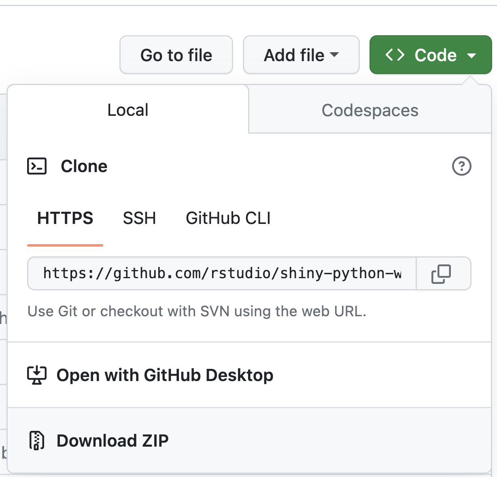

Shiny for Python Workshop
Introduction
This is the workshop website for the Shiny for Python Workshop at the 2023 Posit Conference. While most of these materials are designed to be used in conjunction with the workshop, they also stand alone as an educational resource. If you have questions or comments, please raise a Github issue, and if you would like to attend the in-person workshop, please register today.
If you would like help hosting a Shiny for Python workshop of your own or would like to book a webinar, please contact us on Discord.
Background
This workshop is aimed at people who are somewhat familliar with doing data analysis in Python, but do not have much of a background in Shiny. If you are brand new to Python we recommend spending a bit of time familliarizing yourself with the following topics before the workshop:
- How to install python packages in a virtual environment
- How to do basic data manipulation with pandas or polars
- How to draw plots
- How to clone a repository with git
Setup
There are two ways to work through the examples and exercises in this workshop.
1) Shinylive
Shinylive allows you to run full-featured shiny apps in your browser, and includes a basic editor which is good enough to run examples. As a result you should be able to work through all of the examples in the workshop using just the browser without installing anything locally.
2) Locally with VS Code
While Shinylive is great, it likely isn’t the environment you’ll use to develop Shiny apps, and so it makes sense to set up VS Code and run the examples locally. To do this follow these steps before the workshop:
- Install VS Code
- Install the Shiny for Python VS Code extension
- Clone the repository with
git clone https://github.com/rstudio/shiny-python-workshop-2023.git, or alternately download the repository as a zip file:
 - Navigate to the project directory and create a new virtual environment with
python3 -m venv .vevn - Set your python interpreter to the virtual environment with
CMD + SHIFT + P>Select Interpreter - Open a new terminal prompt, which should switch to
(.venv) - Install the relevant packages with
pip install -r requirements.txt
All of the example apps are stored in the /apps directory. The examples are in apps/examples and the problem sets are in apps/problem-sets. If you’ve installed the VS Code extention can run any of the apps by opening the app.py file and clicking the play button in the top right. Alternately, run them from the command line with shiny run <path-to-app.py> --reload.